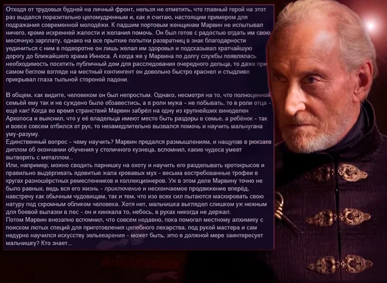
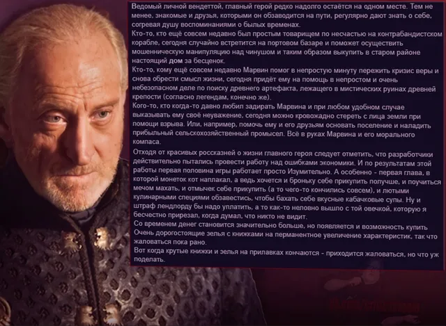
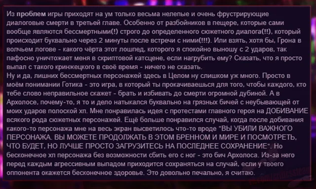

Честный обзор
ВКонтакте
The Chronicles Of Myrtana: Archolos
16 февраля 2022 · №1902 в выгрузке стены · оригинал во ВКонтакте ↗




🌄 Сегодня у нас в гостях наш дорогой Куратор, определенно заслуживающий вашего внимания и времени. Приветствуйте только что вышедшую чистую рецензионную критику на фанатский мод, хотя по факту это отдельная игра внутри многими горячо любимой второй части Готики. В проекте предоставляется возможность прожить жизнь обычного жителя Миртаны, знакомого нам по оригиналу. Не поскупитесь поддержать автора, и в будущем, мы уверены, он порадует нас еще ни одним профессиональным, и что важно, честным обзором, приятного прочтения!!
» The Chronicles Of Myrtana: Archolos
🤝 #ЧестныйОбзор@criticssteam
🎹 #ОбзорыЗнаменитостей@criticssteam
» The Chronicles Of Myrtana: Archolos
🤝 #ЧестныйОбзор@criticssteam
🎹 #ОбзорыЗнаменитостей@criticssteam